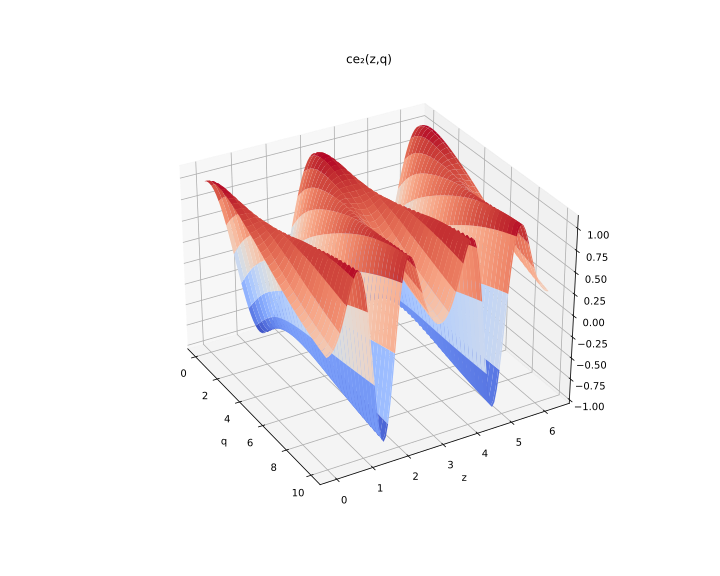

Mathieu.jl
A package for computing integer order Mathieu functions and characteristic values.
The notation used here mirrors the one in NIST's Digital Library of Mathematical Functions.
The methods used to compute the functions and characteristic values are based on matrix diagonalization, and are explained in more details in Cojocaru 2008.
